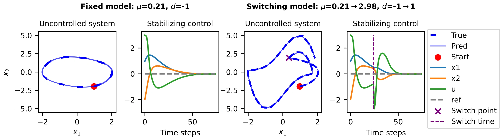
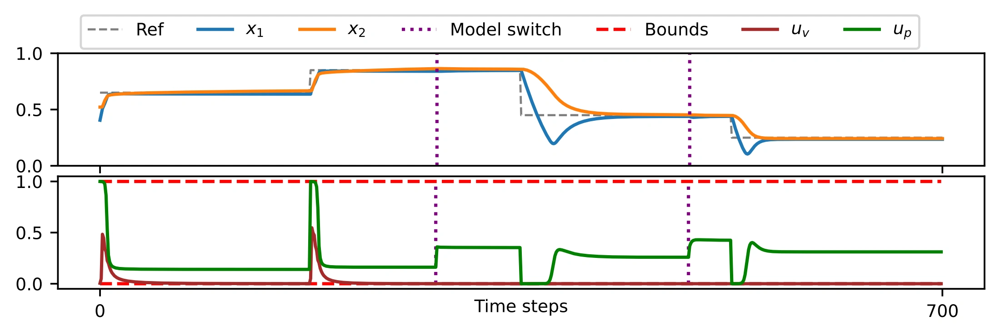
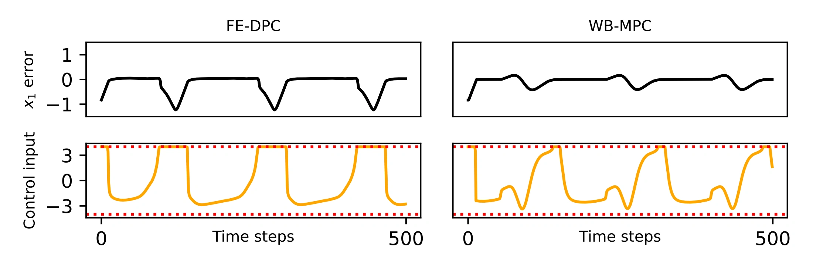
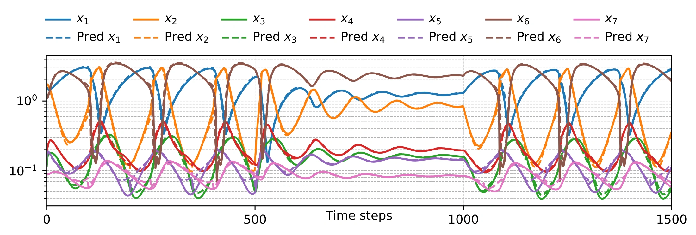
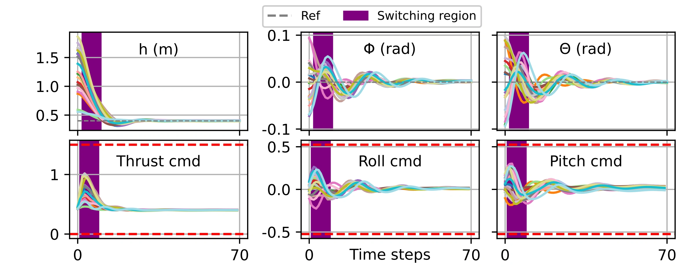

A learned dynamics space
Function-encoder neural ordinary differential equations (FE-NODEs) represent different systems using shared neural basis functions and system-specific coefficients.
L4DC 2026 Learning for Dynamics and Control · Oral
1The University of Texas at Austin 2Johns Hopkins University
A controller trained for one system can struggle when its dynamics change. FE-DPC learns a space of dynamics and a policy conditioned on that space. At deployment, observations identify a compact coefficient vector, which adapts the control action without retraining the neural networks or solving an online model predictive control problem.


Problem and contribution
Research summary. The goal is to learn a feedback policy for nonlinear systems whose dynamics parameters may be unknown or change during operation. The policy must account for the current state, the task, and the system being controlled.
Here, \(\boldsymbol{\nu}\) specifies the dynamics and \(\boldsymbol{\xi}\) specifies objectives and constraints. Classical model predictive control (MPC) repeatedly solves a finite-horizon optimization problem. Differentiable predictive control (DPC) instead trains an explicit policy offline by differentiating through model rollouts. FE-DPC supplies the adaptable learned model that this training requires.
Function-encoder neural ordinary differential equations (FE-NODEs) represent different systems using shared neural basis functions and system-specific coefficients.
The coefficient vector conditions a self-supervised DPC policy, connecting system identification directly to feedback control.
Four nonlinear benchmarks examine prediction, control, and responses to parameter switches. The authors release training code, evaluation notebooks, and checkpoints.
The method
Collect state–input–next-state transitions from a family of systems. Infer each system’s coefficients and optimize the neural bases by minimizing prediction error through the numerical time-stepper.
The bases \(\mathbf g_j\) are shared across the family; the vector \(\mathbf c\) selects an approximation to a particular system’s dynamics. The paper uses fourth-order Runge–Kutta integration.
Use the pretrained FE-NODE as a differentiable simulator. Sample initial states, task parameters, and inferred coefficients; roll out the feedback policy; then update its weights \(\mathbf W\) using the control objective.
Gradients pass through the rollout to the policy. Training uses task losses rather than optimal-control labels. In this formulation, constraints enter as soft penalties; minimizing them does not by itself certify feasibility.
From observed transitions, form an empirical Gram matrix \(\mathbf G\) and projection vector \(\mathbf F\). Solve the regularized least-squares system, then evaluate the policy with the updated coefficients and the current state.
“Zero-shot” means no neural-network retraining. Online adaptation still needs observations and a coefficient solve. It avoids solving the full MPC problem online.
Algorithm 3 uses \(m\) samples and a finite-difference approximation to the state derivative:
The paper uses \(m=100\) data points to infer coefficients in each benchmark. Tikhonov regularization \(\lambda>0\) stabilizes the coefficient calculation. Both the basis and policy weights stay fixed during online evaluation.
Method: paper §2–3, Eqs. (1)–(3), Algorithms 1–3. The experiments use 11, 11, 21, and 32 basis functions for Van der Pol, two-tank, glycolytic oscillator, and quadrotor, respectively (§4 and Appendix A.2).
Numerical experiments
All results below are simulations reported in the paper. Figures are reproduced from the original vector assets, with their axes and legends intact. They show observed benchmark behavior, not a general stability or safety guarantee.
The controller regulates a nonlinear oscillator with unknown \(\mu\) and a direction parameter \(d\in\{-1,1\}\). The example compares uncontrolled predictions and controlled trajectories, first for fixed dynamics and then for a switch after 25 simulation steps.

A pump and valve regulate two liquid levels. The reported 700-step rollout changes both the system parameters and the reference. FE-DPC adjusts through coefficient inference while retaining the same policy weights.

This biochemical model couples seven species. Only the first state is directly actuated and tracked. The control comparison uses a prediction horizon of 50 for FE-DPC and white-box MPC (WB-MPC), which has access to the true dynamics.


A 12-state nonlinear model varies mass and moments of inertia. The reported test uses 20 parameterizations, each with random initialization and an abrupt dynamics switch between 2 and 20 seconds. The altitude target is 0.4 m.

The quantitative comparison uses fixed system parameters, separate from the switching demonstrations above. WB-MPC uses the true dynamics through CasADi; FE-DPC uses learned dynamics and a learned policy.
| Benchmark | FE-DPC MSE | WB-MPC MSE | FE-DPC time (s) | WB-MPC time (s) |
|---|---|---|---|---|
| Van der Pol | 0.002683 | 0.002653 | 0.53 | 1.21 |
| Two-tank | 0.008452 | 0.004164 | 1.13 | 6.75 |
| Glycolytic oscillator | 0.180299 | 0.032320 | 5.89 | 136.07 |
| Quadrotor | 0.022003 | 0.024208 | 1.93 | 155.85 |
MSE is the paper’s mean squared state-to-reference error; values should be compared within each benchmark. §4 reports a single NVIDIA RTX 5090 GPU for the experiments. Table 1 does not specify timing batch size, timing aggregation, CPU configuration, or repeated-run uncertainty, so these times are not presented as per-step latency.
The listed FE-DPC times are lower for all four benchmarks. WB-MPC has lower MSE in the first three, while the quadrotor table entry favors FE-DPC. The paper’s prose says MPC has the lowest error across all examples and gives an upper speedup of 71.5×; its quadrotor table values instead imply approximately 80.75×. We retain the original measurements without promoting either conflicting summary as a headline result.
Scope and interpretation
The approach assumes full-state information and historical trajectories that sufficiently represent the dynamics family. Adaptation relies on new transition observations and on the learned basis being useful for the encountered system.
The policy approximates the optimal-control solution. Soft constraint penalties and successful simulations do not establish universal feasibility or closed-loop stability. §3.1 discusses representation results from prior function-encoder work, rather than a new general control guarantee.
The paper evaluates four numerical systems; it reports no hardware deployment. The inspected code release includes Van der Pol, two-tank, and glycolytic evaluation notebooks and checkpoints. A corresponding quadrotor experiment was not present in that release.
This page follows arXiv v3 (15 April 2026), with publication details checked against PMLR. Glycolytic parameter ranges differ between §4, Appendix A.2, and the released data generator, so no unified range is asserted here.
Explore the work
The code uses Function Encoder and NeuroMANCER. Notebook links pin the inspected code revision; the main Code button leads to the current repository.
Published in the Proceedings of the 8th Annual Learning for Dynamics and Control Conference, PMLR 331, pages 299–315, 2026.
@InProceedings{pmlr-v331-iqbal26a,
title = {Zero-Shot Function Encoder-Based Differentiable Predictive Control},
author = {Iqbal, Hassan and Li, Xingjian and Ingebrand, Tyler and
Thorpe, Adam and Kumar, Krishna and Topcu, Ufuk and Drgona, Jan},
booktitle = {Proceedings of The 8th Annual Learning for Dynamics and Control Conference},
pages = {299--315},
year = {2026},
editor = {Sukhatme, Gaurav and Lindemann, Lars and Tu, Stephen and
Wierman, Adam and Atanasov, Nikolay},
volume = {331},
series = {Proceedings of Machine Learning Research},
month = {17--19 Jun},
publisher = {PMLR},
url = {https://proceedings.mlr.press/v331/iqbal26a.html}
}BibTeX follows the publisher’s record, including its ASCII rendering of author names. Scientific content: arXiv v3. Affiliations above are those listed in the paper.